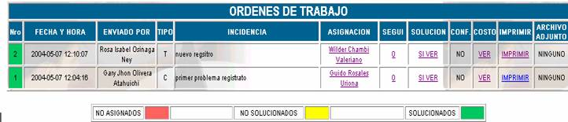
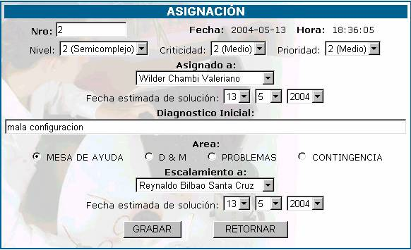
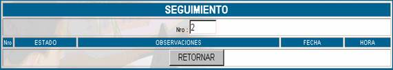
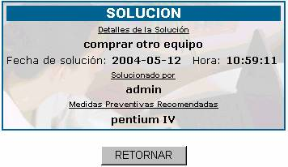
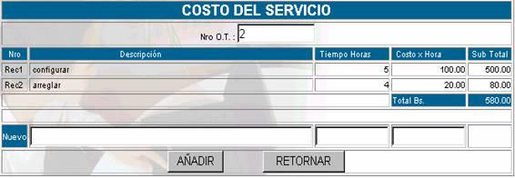

ORDENES DE TRABAJO
Cada cliente que realiza una orden de mesa de ayuda, ya sea para solucionar un problema, para realizar una consulta o con otro fin, almacena en la base de datos una descripción completa de su orden de mesa. La siguiente figura muestra la pantalla principal de la opción ORDENES DE TRABAJO.

Nro;
Especifica el número de orden de mesa de ayuda recibido, este número es correlativo, y se marca con un color de acuerdo al estado en el que se encuentra.NO ASIGNADO à Cuando la orden de mesa no ha sido asignada a un especialista de acuerdo a su nivel, incidencia y prioridad.
NO SOLUCIONADOS à Cuando la orden de mesa ha sido asignada a un especialista, pero dicha persona aun no ha registrado una solución.
SOLUCIONADOS à Cuando el especialista ha registrado la solución a la orden de mesa.
Fecha y Hora; especifica la fecha y hora en la que la orden de mesa ha ingresado en la mesa de ayuda.
Enviado por; especifica el nombre de la persona que envió la orden de trabajo.
Tipo; especifica el tipo de usuario que mando la orden de mesa.
Incidencia; especifica la descripción de la incidencia a la cual se le tiene que dar solución. Se denomina incidencia, a todas las consultas de los clientes sin aclarar la naturaleza de las mismas, pudiendo ser: reclamos, denuncias, dudas operativas, técnicas, de normatividad, aplicación, obtención de información, desarrollo, etc.
Asignación; especifica el nombre de la persona a la cual se ha asignado la solución de la orden de mesa, para realizar la descripción de la asignación haga click sobre el nombre y aparecerá la siguiente pantalla:

Nro;
número de orden de mesa.Fecha y Hora;
fecha y hora de asignación.Nivel;
dependiendo de la complejidad, el número de recursos tecnológicos a utilizar, el grado de especialización y conocimientos que deberá tener la persona que solucione la orden de mesa se asignará 1. Simple 2. Semicomplejo 3. ComplejoCriticidad;
dependiendo del nivel de impacto del problema dentro de la institución se asignara el nivel de criticidad 1. Alto. 2. Medio. 3.Bajo.
Prioridad;
dependiendo del nivel de prioridad que le asigne el coordinador de la mesa de ayuda será 1. Alto. 2. Medio. 3. Bajo.Asignado a;
despliega un menú de opciones de las personas que pueden solucionar la orden de mesa.Fecha estimada de solución
; la persona asignada para solucionar la orden de mesa, en función de la complejidad de la misma, deberá dar una fecha aproximada de solución.Diagnóstico Inicial;
la persona encargada de la solución deberá realizar un primer diagnóstico del problema que deberá ser registrada en esta pantalla.Area;
dependiendo del área a la cual corresponde el problema de la orden de trabajo se tipificará a cual de las siguientes áreas pertenece: Mesa de Ayuda, D&M, Problemas, Contingencia.Escalamiento a;
cuando la persona asignada por algún motivo no puede solucionar el problema de la orden de trabajo realiza un escalamiento a otra persona.Fecha estimada de solución;
la persona a la cual se realiza el escalamiento, debe dar una fecha aproximada de la soluciónSegui; en caso que la orden de trabajo tenga que ser realizada en fases en esta columna se mostrara el seguimiento del trabajo, haciendo click se mostrará la siguiente pantalla

Estado;
se aplicará una calificación del 1 al 5 en función del cumplimiento o vencimiento de fechas, se aplica la escala siguiente: 1 Cumplida en fecha, 2 Cumplida retrasada, 3. Pendiente en Fecha, 4.Pendiente retrasada, 5. Desestimada.Observaciones
; se añaden comentarios del especialista y/o de Mesa de ayuda.Fecha y Hora;
registro de tiempos del seguimiento.Solución; esta opción se activará siempre y cuando el responsable asignado haya registrado la solución de la orden de trabajo. Presione sobre SI VER para ver la descripción de la solución.

Conf;
es de responsabilidad del administrador validar, con el cliente solicitante de la orden de trabajo, su satisfacción con la solución dada, además de confirmar los registros de tiempo dados por el especialista. Esta confirmación deberá hacerse en las siguientes 8 horas hábiles de trabajo y se deben llenar los siguientes datos:Tiempo y Calidad de Atención
; se establece una escala de 1. Malo 2.Bueno 3. Excelente que deberá ser juzgada por el cliente.Observaciones del cliente
; a la solución recibida, a la atención, a las recomendaciones.Costo; Si se hace click sobre la opción
VER se obtendrá:
Donde se cuenta con los siguientes campos:
Nro;
que es el número de la orden de trabajo que se esta analizando.Descripción;
Acerca cuanto se estima que sera el costo.Tiempo de Horas;
Indicar las horas de trabajo que demanda realizar la orden de trabajoCosto por hora;
Como su nombre lo dice en este campo se debe poner el costo por hora que demanda realizar la orden de trabajo.Sub Total;
En este campo se irán realizando las operaciones matemáticas necesarias para saber cual es el costo total que se va teniendo.Imprimir; Al hacer click sobre esta opción usted obtendrá un reporte detallado desde que la orden de trabajo ingresa al sistema , su seguimiento y solución correspondientes.